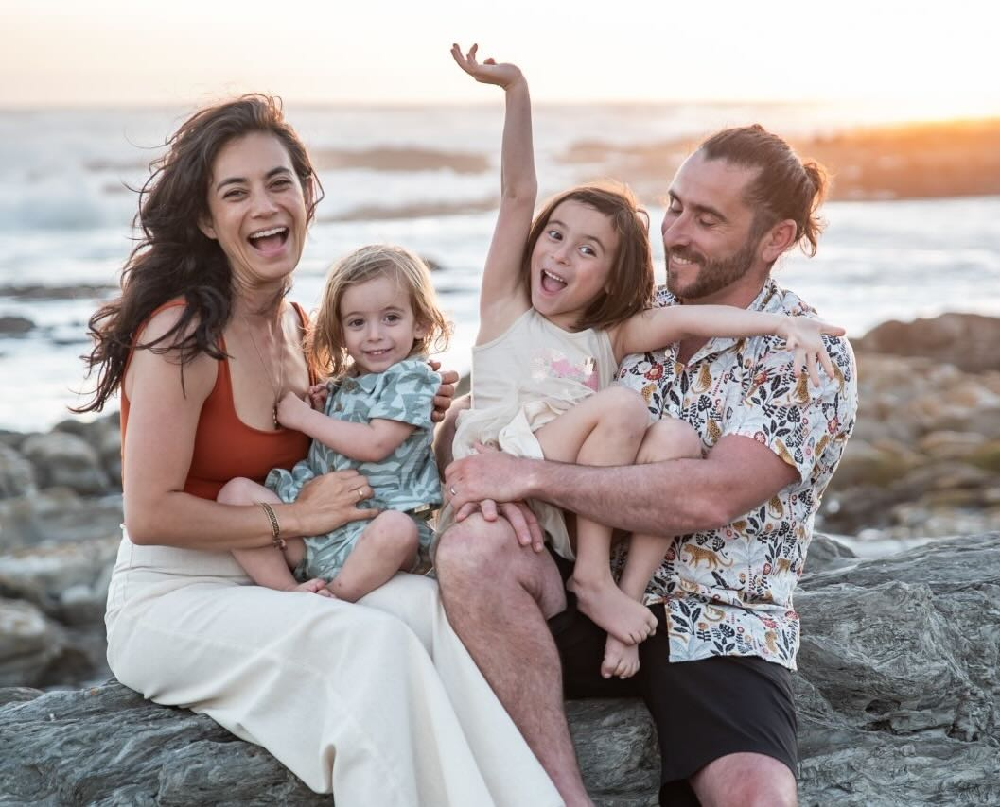

Founder Bio
Joshuah Vincent — Founder Bio

Three lengths. Use whichever the outlet asks for.
Contact: josh@wildatlasapp.com
LinkedIn: linkedin.com/in/joshuahv
In his words: A letter from the founder — why we built Wild Atlas
80 words — for press “About” sections
Joshuah Vincent is the founder of Wild Atlas, a narrated animal discovery app for children aged 3 and up. A Principal Product Manager at Meta for six years — shipping AR experiences including Ray-Ban Meta smart glasses and Orion, Meta’s next-generation AR platform — he previously led product at Zillow and Xero, and holds 25+ patents across AR, AI, and 3D visualisation. The son of South African conservation documentary filmmakers, he grew up in the veld learning about animals from his parents. He lives in Seattle with his wife and two young children.
30 words — byline / Q&A bumper
Joshuah Vincent is the founder of Wild Atlas. Former Principal Product Manager at Meta — Ray-Ban Meta and Orion — previously Zillow and Xero. Computer Science graduate with 25+ patents. Based in Seattle.
One-liner — podcast bumpers and intros
Joshuah Vincent — founder of Wild Atlas, former Principal Product Manager at Meta (Ray-Ban Meta, Orion), son of South African conservation documentary filmmakers, Seattle dad of two.